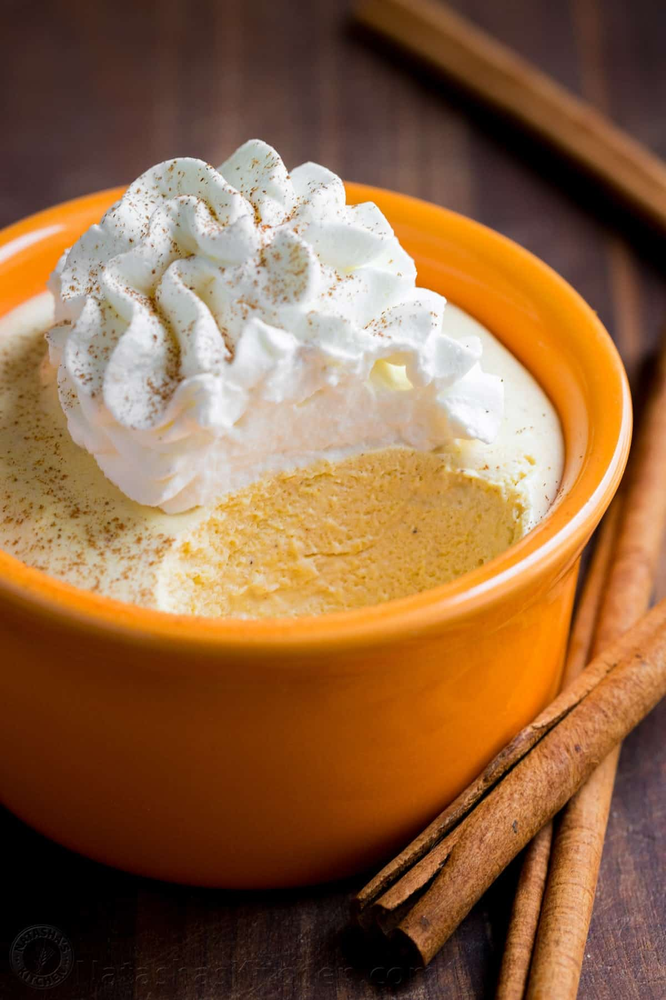

Pumpkin Mousse Recipe
Home

Ingredients
- 1 tablespoon butter
- 24 marshmallows
- 1/2 cup canned pumpkin
- 1 teaspoon vanilla extract
- 1 teaspoon pumpkin pie spice
- 1/3 cup confectioners' sugar
- 1 cup heavy cream
- Step 1: Melt the butter in a large skillet. Stir in the marshmallows, milk, and pumpkin. Tir frequently until melted and smooth. Remove from heat; stir in vanilla and pumpkin pie spice. Cool completely about 30 minutes.
- Step 2: Combine 1/3 cup confectioners' sugar and 1 cup heavy cream in a large bowl. Use an electric mixer to beat until stiff peaks form. Fold whipped cream into cooled pumpik mmixture. Pour moussee into ramekins or chocolate shells. Cover and refrigerate until firm, about 2 hours.